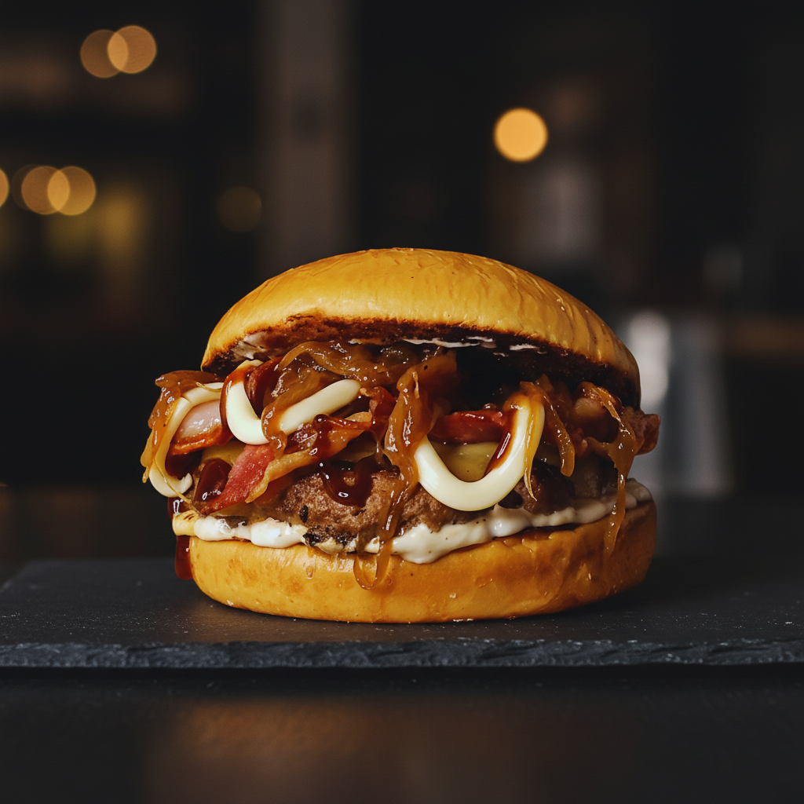
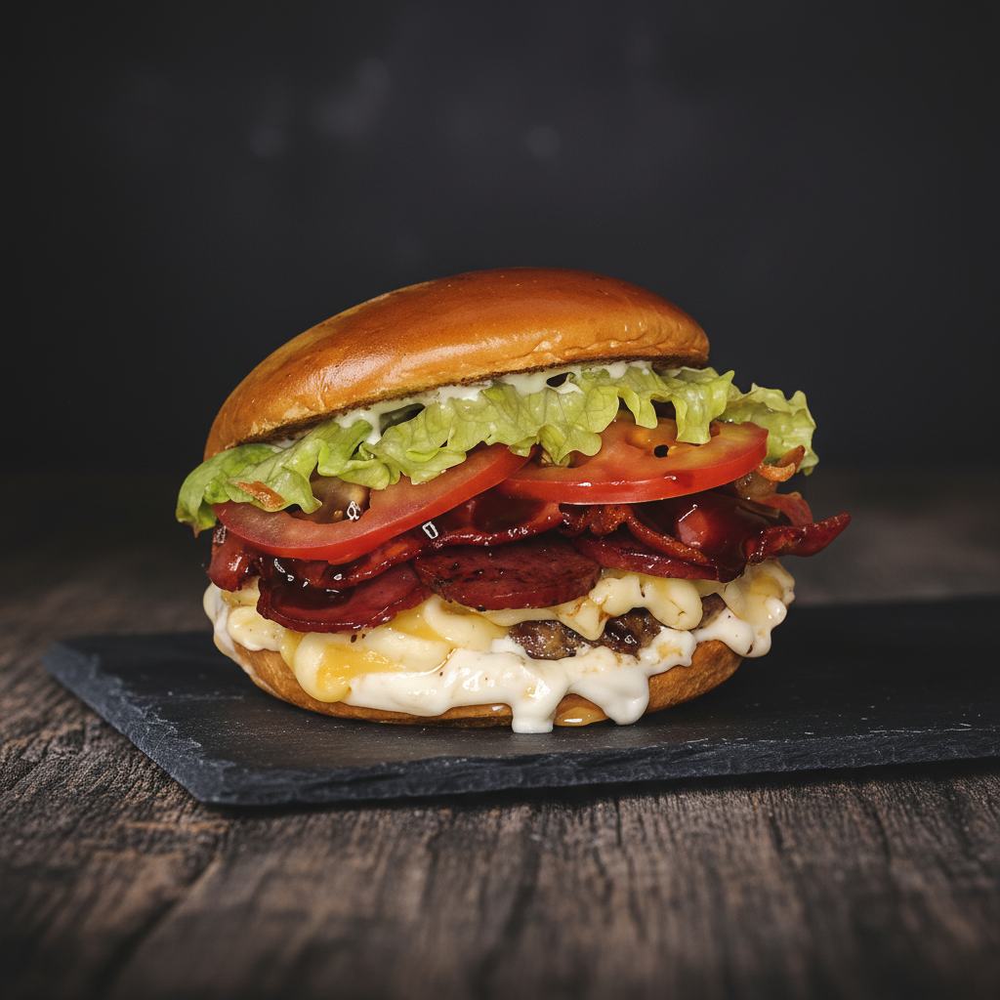
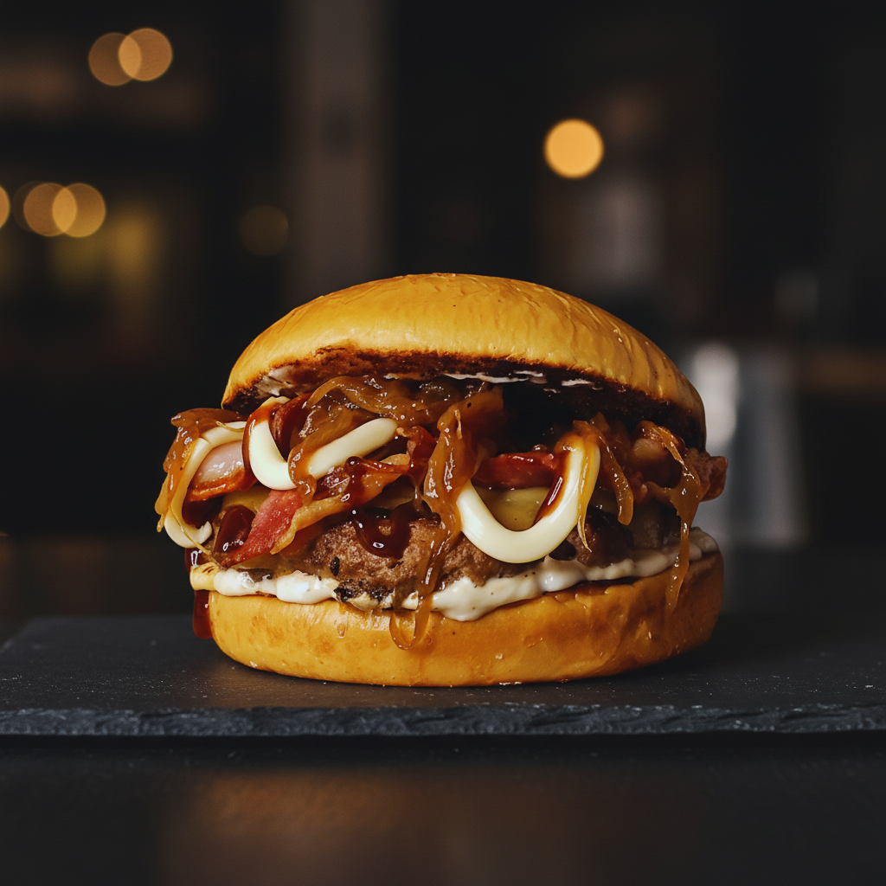
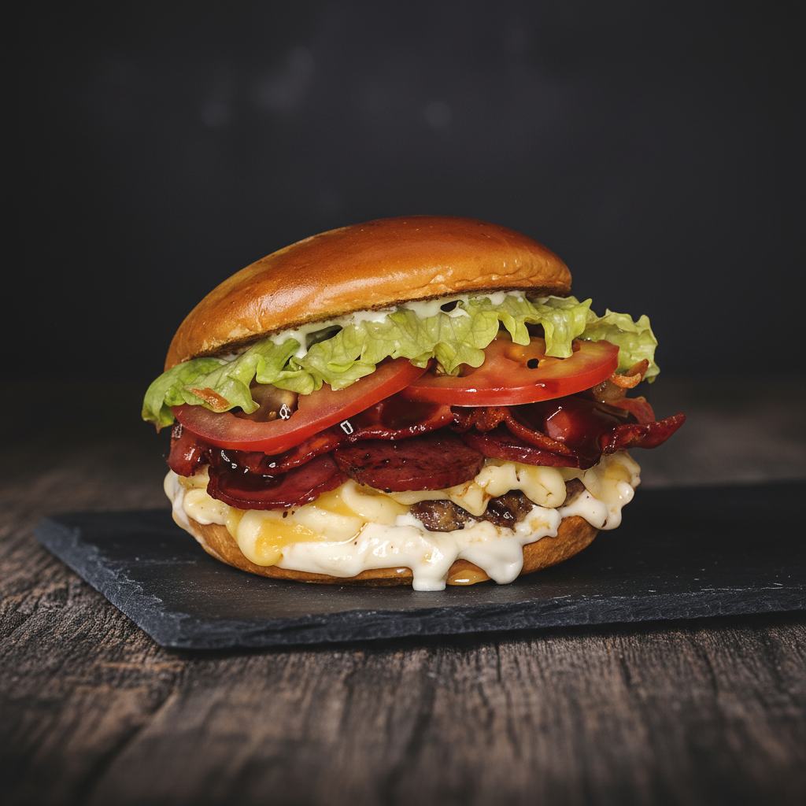
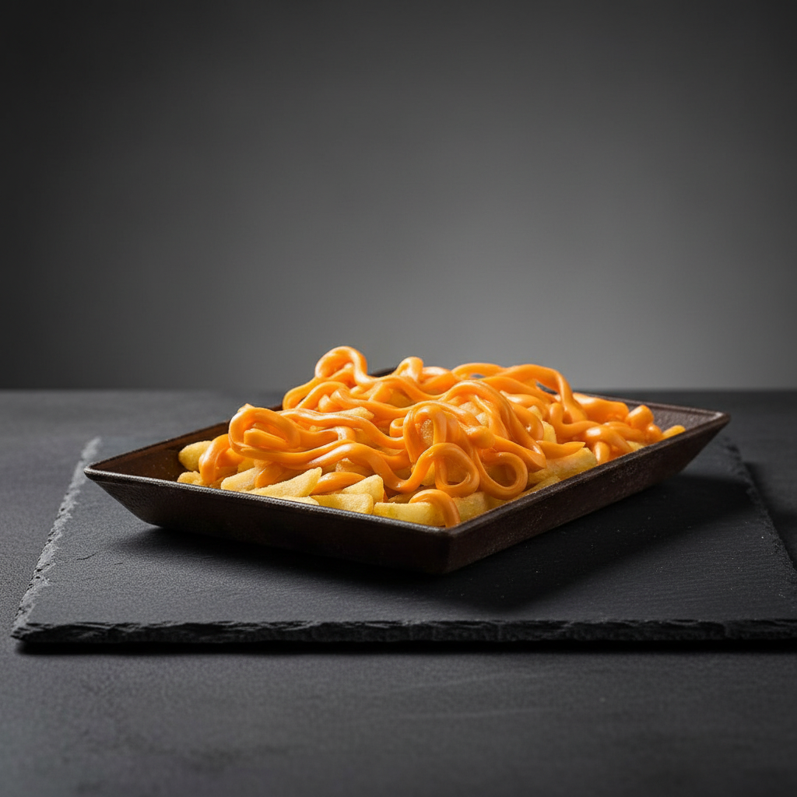
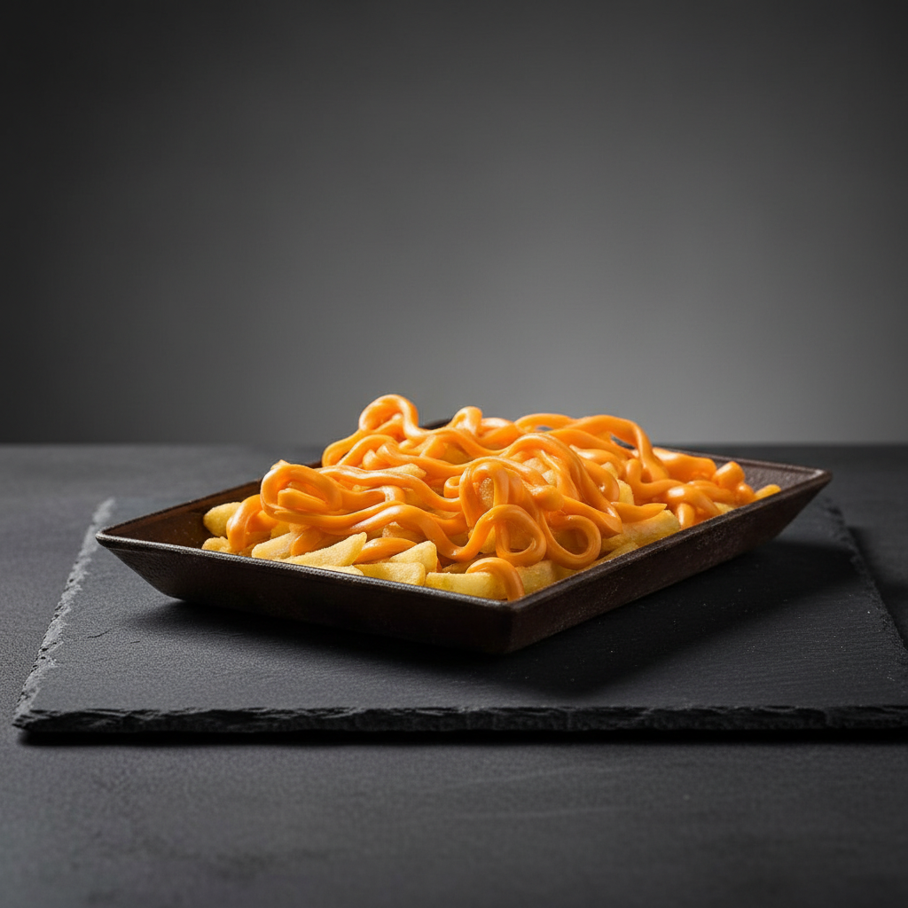
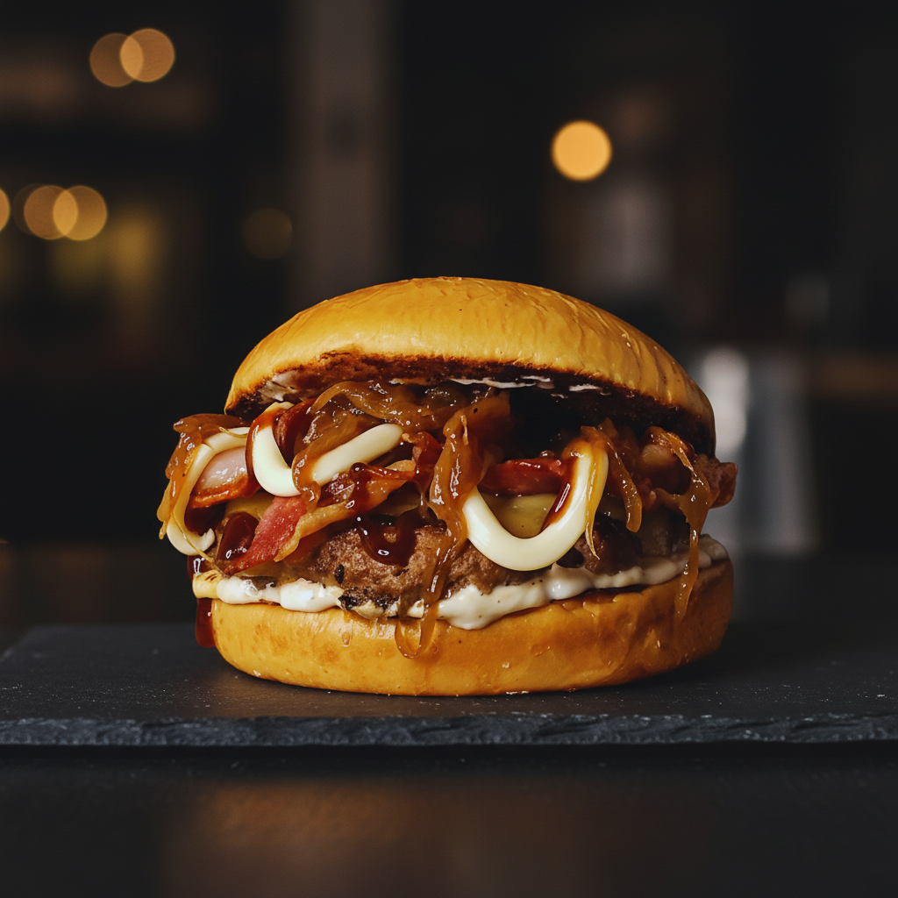
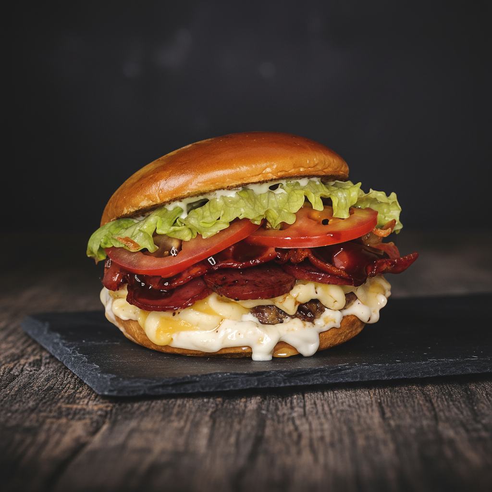
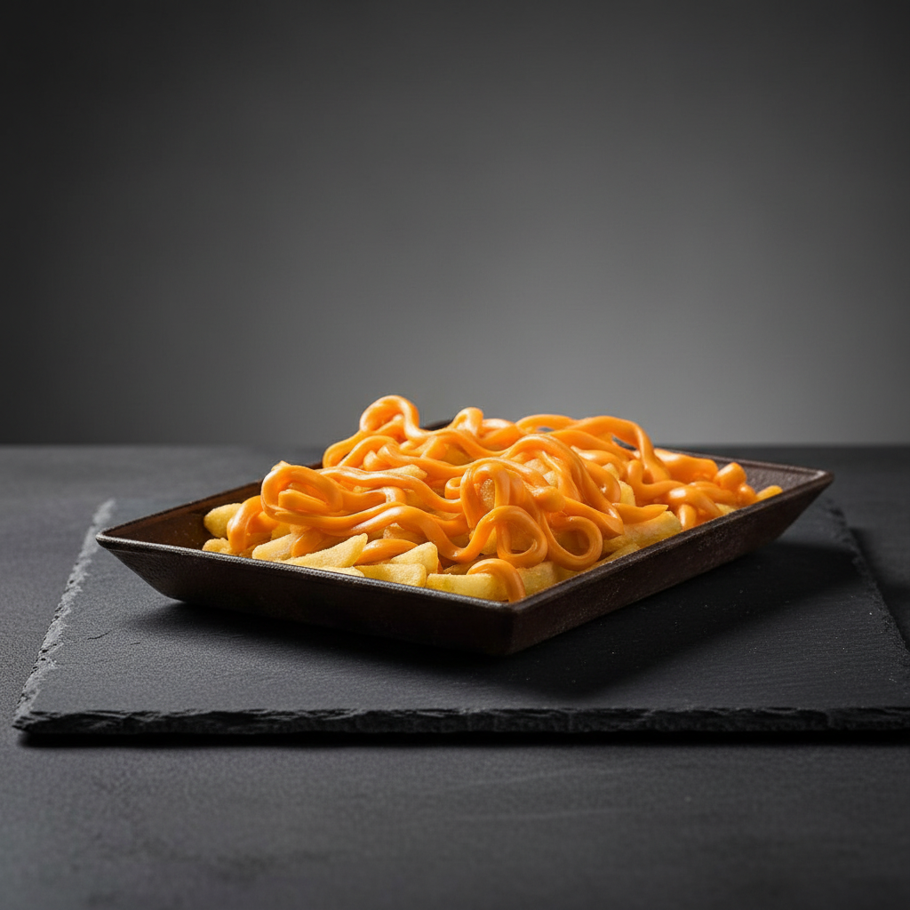

Lanches e Porções
Acesse o cardápio para ver todas as opções, valores e aproveite para garantir já o seu!


 



 


Bem-vindo a Coronel Burguer! Aqui a missão é simples: entregar sabor, qualidade e aquele lanche que marca sua noite. Trabalhamos com ingredientes selecionados e preparados com o padrão que você já conhece. Nosso foco está sempre em oferecer refeições saborosas e com a identidade única da Coronel.
Acesse o cardápio para ver todas as opções, valores e aproveite para garantir já o seu!


